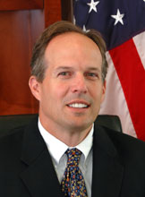
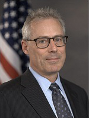

Earl E. Devaney is the President of The Devaney Group, having retired from the Federal government, with over 41 years of service, at the end of 2011...
Earl E. Devaney is the President of The Devaney Group, having retired from the Federal government, with over 41 years of service, at the end of 2011...
Rep. Eric Cantor is a results-oriented leader in Congress who is committed to helping solve problems for America's families. He has developed a...
Hon. Anne Castle was confirmed as Assistant Secretary for Water and Science on June 19, 2009. In this capacity, Castle oversees water and science policy for...
Earl E. Devaney is the President of The Devaney Group, having retired from the Federal government, with over 41 years of service, at the end of 2011...
 Bill Franks is Chief Analytics Officer for Teradata, providing insight on trends in the Advanced Analytics space and helping clients understand how Teradata...
Bill Franks is Chief Analytics Officer for Teradata, providing insight on trends in the Advanced Analytics space and helping clients understand how Teradata...
Joel Gurin is senior advisor to the Governance Lab at New York University, which studies and promotes the use of data and collaborative technology to improve the workings of government. He has a...
 Hudson Hollister is the founder and executive director of the Data Transparency Coalition. The Coalition is a trade association of technology companies, nonprofits, and...
Hudson Hollister is the founder and executive director of the Data Transparency Coalition. The Coalition is a trade association of technology companies, nonprofits, and...
Jeanne Holm leads collaboration and builds communities as the Evangelist for Data.Gov (an open government flagship project for the White House managed by GSA)...
 Congressman Darrell Issa represents the people of California’s 49th Congressional District in the United States House of Representatives, a seat he has held since 2001...
Congressman Darrell Issa represents the people of California’s 49th Congressional District in the United States House of Representatives, a seat he has held since 2001...
David A. Lebryk was appointed the first Commissioner of the U.S. Department of the Treasury’s Bureau of the Fiscal Service (Fiscal Service) on October 7, 2012...
Craig M. Lewis is Chief Economist and Director of the Division of Economic and Risk Analysis at the U.S. Securities and Exchange Commission. He is currently on leave from...
Linda Powell is the Chief Business Officer of the Office of Financial Research, U.S. Treasury. She was most recently the Chief of the Economic...
Sen. Mark Warner was elected to the U.S. Senate in November 2008, and serves on the Senate Banking, Budget, Commerce and Intelligence committees. After more than four...
 Peter Warren is majority Policy Director for the House Oversight and Government Reform Committee, chaired by Rep. Darrell Issa (R-CA). Warren’s primary...
Peter Warren is majority Policy Director for the House Oversight and Government Reform Committee, chaired by Rep. Darrell Issa (R-CA). Warren’s primary...